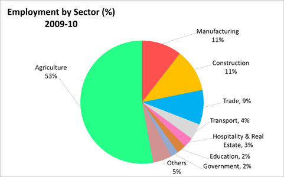
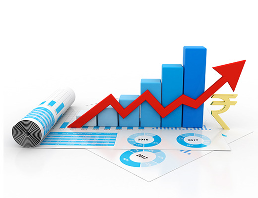

Historically, India has classified and tracked its economy and GDP in three sectors: agriculture, industry, and services. Agriculture includes crops, horticulture, milk and animal husbandry, aquaculture, fishing, sericulture, aviculture, forestry, and related activities. Industry includes various manufacturing sub-sectors. India's definition of services sector includes its construction, retail, software, IT, communications, hospitality, infrastructure operations, education, healthcare, banking and insurance, and many other economic activities
Strong economic growth in the first quarter of FY 2022-23 helped India overcome the UK to become the fifth-largest economy after it recovered from repeated waves of COVID-19 pandemic shock. Real GDP in the first quarter of 2022–23 is currently about 4% higher than its corresponding 2019-20, indicating a strong start for India's recovery from the pandemic. Given the release of pent-up demand and the widespread vaccination coverage, the contact-intensive services sector will probably be the main driver of development in 2022–2023. Rising employment and substantially increasing private consumption, supported by rising consumer sentiment, will support GDP growth in the coming months.
Future capital spending of the government in the economy is expected to be supported by factors such as tax buoyancy, the streamlined tax system with low rates, a thorough assessment and rationalisation of the tariff structure, and the digitization of tax filing. In the medium run, increased capital spending on infrastructure and asset-building projects is set to increase growth multipliers, and with the revival in monsoon and the Kharif sowing, agriculture is also picking up momentum. The contact-based services sector has largely demonstrated promise to boost growth by unleashing the pent-up demand over the period of April-September 2022. The sector's success is being captured by a number of HFIs (High-Frequency Indicators) that are performing well, indicating the beginnings of a comeback. India has emerged as the fastest-growing major economy in the world and is expected to be one of the top three economic powers in the world over the next 10-15 years, backed by its robust democracy and strong partnerships.